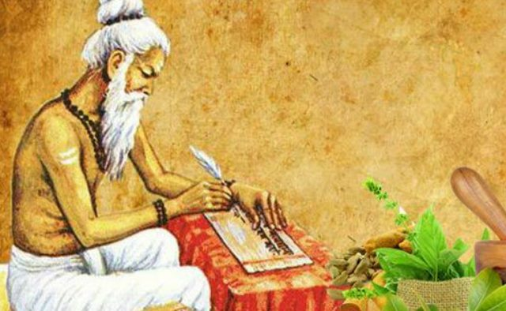

|  |
Charaka and the Charaka SamhitaOverviewCharaka, a well-known physician from the second century BCE, is regarded as one of the most significant people in ancient Indian medicine. He is most known for writing the Charaka Samhita, a comprehensive and renowned treatise that is a cornerstone of Ayurveda, the ancient Indian medicinal system. The Charaka Samhita is a comprehensive medical text that takes a holistic approach to health and well-being. ContributionsThorough Classification of AilmentsOne of Charaka's key achievements was the thorough classification of ailments. He classified diseases into eight major categories based on their characteristics, symptoms, and underlying physiological imbalances. This classification system served as the foundation for Ayurvedic disease diagnosis and treatment. Detailed Causes, Symptoms, and CuresCharaka outlined the causes, symptoms, and cures for a variety of diseases in the Charaka Samhita. His explanations were quite detailed, encompassing a wide spectrum of illnesses and treatments. Charaka emphasised the necessity of identifying the underlying causes of diseases and argued for a more personalised approach to treatment. His comprehensive approach to recovery included herbal remedies, nutritional interventions, lifestyle changes, and therapy practices. Emphasis on Preventive Care and Healthy LifestyleCharaka's lectures emphasised the importance of preventive care and cultivating a healthy lifestyle. To maintain general well-being, he emphasised the importance of a balanced diet, regular exercise, and basic hygiene practices. He also provided seasonal and daily routine instructions to help people fit with the natural rhythms of life, fostering harmony and health. LegacyCharaka's contributions to Ayurveda are still having an impact on modern holistic treatment and lifestyle practices. His thorough classification of ailments, in-depth grasp of disease causes, and emphasis on preventive care and healthy living are still highly regarded in the medical community. |